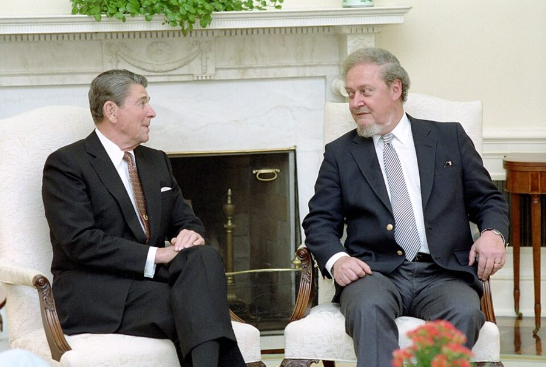
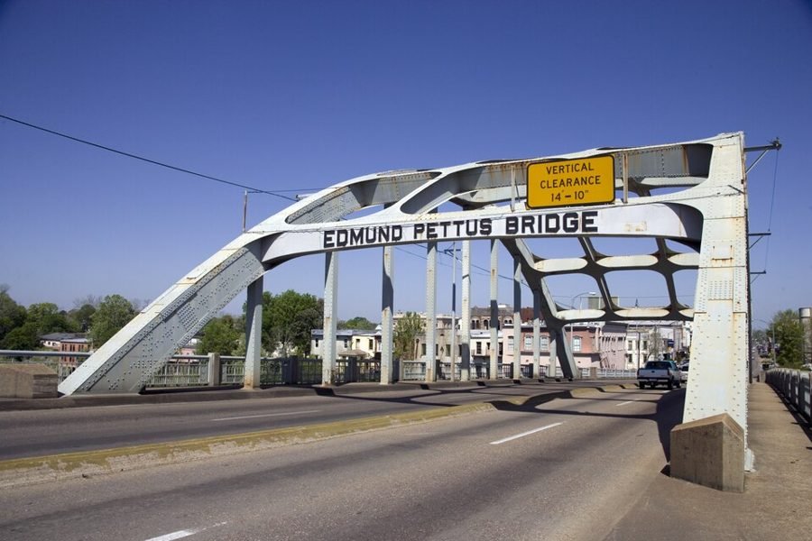

这一页在做什么
六十六到六十九岁，在胡佛研究所。接上一页：Forbes 的固定专栏停了，晚说话孩子的家长小组还在他手上。二十一封，全是他写出去的，大多很短：回陌生读者；找 Hugh Price、Bork、Connerly 这些公众人物讲理；给侄女和晚辈的家信；把家长小组交给专业的人。
读的时候盯住一个反复出现的问法：这个说法肯不肯拿证据来检验。
1997 1998 1999 2000
胡佛研究所，斯坦福
Late-Talking Children 出版 微软被起诉 Dateline 播出
来信的读者 晚说话的孩子 家人 公众人物 朋友和同行
本站示意图。一个圆点是一封信，按信上的日期画；空心的那封没写日期，是 1998 年圣诞节给 Milton Friedman 的便条。分类是本站分的。1998 年 4 月到 10 月最密，九封信，差不多都在争公共话题。给 Bork 的那封后面还附了一篇专栏，没有另画。
Milton Friedman，1976 年。这一页最短的一封是写给这位老师的：1998 年圣诞节，随两张自己拍的风景照寄去的两句话。UPI，公有领域，维基共享资源 这一页串场文字少，多数信前面只有一两句。这个十年到这里结束，下一页是 2000 年，回忆录出版，侄女 Ruthellen 写信来。
收信人和提到的人
这一页收信人很多，一人多半只有一封，都是他写过去的。五封回给名字被星号盖住的陌生人；公众人物书里给了全名和身份。
Condoleezza Rice，2005 年任国务卿时的官方肖像。这一页最后一封写给她的时候是 1999 年底，她刚卸任斯坦福的教务长，串场文字说公众还不大知道她。Department of State，公有领域，维基共享资源
Mr. ****** / Ms. ***** 来信的陌生人 · 名字隐去 五封：谈社会正义的一位（1997 年 1 月）、一位教师（1998 年 4 月）、替平权法案辩护的一位、问阴谋论的一位、问总统和经济的一位。回信都短，口气从客气到很不客气。
Professor Camarata Stephen Camarata · Vanderbilt 大学教授 研究和治疗晚说话孩子的专家，听了电台节目主动写信来。回信只印了一段，要紧的在信后的串场：他想脱身，这个人给了他出路。
Mrs. Gage 家长小组的成员 · 书里只有姓 上了电视节目的那位母亲。串场文字说，她同意公开身份，所以是整个小组里唯一没被隐去名字的人。
Ruthellen 住在哈莱姆的侄女 他长大的那个家的下一代，上一页出现过。这一封是新年的家信：她在哥伦比亚大学有过短短一段，后来不顺，他在给她打气。
Ruth 替他安排演讲的人 · 书里只有名 公事上的熟人。他从底特律演讲回来，转述了一个听来的故事，全信没有一句议论。
Mr. Price Hugh Price · Urban League 会长 在《纽约时报》写文章批评 SAT。他读了主动写信去争。这是这一页最长、最用力的一封信。
Bob Robert Bork · 前联邦法官 老相识，当时在 American Enterprise Institute。微软案上两人难得站在对面。信短，后面附了一整篇专栏。
Mr. Connerly Ward Connerly · 加州大学校董 他主动写的信。看到报道说 Connerly 想评估族群研究的课程，他写信去出主意，主意很具体。
Milton Milton Friedman · 芝加哥大学时的老师 圣诞节的便条，两句话，一个玩笑。
Chris 华盛顿的朋友 · 书里只有名 串场文字只说是一位人脉很广的朋友，想安排他见当时的得州州长 George W. Bush。本站不猜是谁。
Bill W. R. Allen · UCLA 时的同事 70 年代那份 UCLA 备忘录的收信人。这封信话题最散：移民、非洲的人口密度、刚去世的 Julian Simon。信末并提的 Fran 书里没有介绍。
Condoleezza Rice 斯坦福的同事 · 苏联问题学者 不是信，是一张两条的便笺：一条问书，一条讲笑话。
Ruth 不是 Ruthellen。 1998 年 1 月的 Dear Ruthellen, 是侄女，逗号；4 月的 Dear Ruth: 是安排演讲的人，冒号。前一封是家信，后一封是公事上的熟人。
没单列的几位。 Ms. O'Beirne 是 National Review 的作者 Kate O'Beirne，信只有三句。Mr. Daniel 书里没有介绍，从回信看是一位来信的人。1999 年 6 月那封的称呼整个是星号，串场文字说是一位年轻的亲戚。给 Bill 的信里提到两位经济学家：Julian Simon 和 Kuznets，见背景。
信件地图
一条是一封信。斜体字是那封信正文开头的几个词，照这一版屏幕上的字抄的，在 Kindle 里搜它就能跳过去。编号是黄底的，是别人写来的信；这一页没有。「留意」只给方向，答案在信里。
It is not nearly as surprising 1997 年 1 月 31 日 · 写给一位来信的人（名字隐去） 留意：他引了对方的哪句话；他拿什么当反证；结尾那句是冲谁说的。Your interest in our group is 1997 年 7 月 28 日 · 写给 Professor Camarata 留意：最后那句带引号的话是什么意思；信后的串场比信坦白得多。I hope that this will really 1998 年 1 月 3 日 · 写给 Ruthellen 留意：他为什么讲旅行社那位女士的事；末段的 50 年是从哪天算起的。The people treated me extremely well 1998 年 4 月 7 日 · 写给 Ruth 留意：桥上是谁先问谁；全信没有一句评论。If the educational deficiencies are caused 1998 年 4 月 9 日 · 写给一位教师（名字隐去） 留意：整封信只有一个问句。他要对方解释的是哪件事。It may not surprise you that 1998 年 5 月 29 日 · 写给 Hugh Price 留意：体温计比的是什么；他先认了哪个共同目标；最后算的是哪个数。After looking over the material you 1998 年 6 月 4 日 · 写给 Robert Bork 留意：他说自己真正不同意的是什么；他拿 Bork 自己从前的话来问 Bork。Few things develop as fast as 附在上一封里的专栏 留意：标题里的一快一慢；他怎么区分保护竞争和保护竞争者。Press accounts say that you are 1998 年 6 月 19 日 · 写给 Ward Connerly 留意：他建议问谁、怎么问；为什么连选票防复印都想到了。While I appreciate your sincerity in 1998 年 6 月 23 日 · 写给一位读者（名字隐去） 留意：对方讲的是过去，他要求讲什么；两个反问各针对哪一点。Belated bravos for your essay on 1998 年 7 月 28 日 · 写给 Kate O'Beirne 留意：括号里的那个百分比是哪本书里来的。Conspiracies are hard to keep secret 1998 年 8 月 26 日 · 写给一位读者（名字隐去） 留意：他举的例子里，主谋手里有哪四样东西。As for what Clinton did that 1998 年 10 月 1 日 · 写给一位读者（名字隐去） 留意：他拿哪位总统来对照；最后一句是个反证。In view of all that I 没写日期，1998 年圣诞节 · 写给 Milton Friedman 留意：第二句的 Fortunately 是庆幸什么。I have just been notified that 1999 年 3 月 16 日 · 写给家长小组全体 留意：采访是哪年做的；最后一句是黑色玩笑。You were wonderful on 1999 年 3 月 18 日 · 写给 Mrs. Gage 留意：她承认了什么；这句话驳倒了「专家」的哪种担心。While I appreciate your efforts to 1999 年 4 月 26 日 · 写给 Chris 留意：他愿不愿意见；警告里的 him 原先指谁，现在指谁。I am glad you asked about 1999 年 6 月 1 日 · 写给一位年轻的亲戚（名字隐去） 留意：对方想做什么；大写的那三个词；他给的理由。The cultural impact of bringing Mexico 1999 年 7 月 2 日 · 写给 Bill 留意：他对移民的保留落在哪；Simon 那封信里，谁因为谨慎没开口。You are quite right that wealth 1999 年 9 月 3 日 · 写给 Mr. Daniel 留意：他建议有负罪感的富人去做什么；hard-hearted 是褒是贬。1. BOOK: I am currently writing 1999 年 12 月 9 日 · 写给 Condoleezza Rice 留意：他在写哪本书；第二条里夫妻俩各说了一句什么。
背景：作者默认你知道的事
SAT、209 号提案和加州大学
SAT 是美国大学入学用的标准化考试。1996 年加州选民通过 209 号提案，禁止公立机构在招生、雇人时按种族给优待；带头推动的是加州大学校董 Ward Connerly。1998 年秋天入学的那一届是新规则下的第一届，伯克利录取的黑人新生大幅减少，全国都在争。给 Price 和 Connerly 的两封信都写在这一年的五六月。
他转述的对方
他的回答
SAT 预测不准， 也不该是录取的全部
体温计也不准、也不是全部， 可没人要医院扔掉它
文章从自己参加的 平权法案辩论讲起
别再算跟白人辩论赢几分， 问什么对黑人学生最有用
放宽标准，进名校的 黑人学生才多
要数的是毕业出来的人， 不是进去的人
分数差距这么大， 说明考试本身有问题
分数只是报信的， 该追究的是学校和风气
本站示意图。Price 的文章书里没印。左栏前两行是从回信里倒推的，后两行是支持优待录取的人常用的理由，都只能算他眼里的对方。右栏里伯克利毕业人数的说法、UCLA 的经历，是信里他一方的说法。
微软案

里根在椭圆形办公室会见 Robert Bork。1987 年 Bork 被提名为最高法院大法官，参议院没有通过；索维尔在听证会上替 Bork 作过证。White House Photographic Office，公有领域，维基共享资源 1998 年 5 月，美国司法部和二十个州起诉微软，说它把浏览器捆在 Windows 里，挤压对手 Netscape。Bork 早年写过反垄断法的名著 The Antitrust Paradox （1978），主张少管；这一回却在给 Netscape 一方当顾问，所以两人站到了对面。专栏写在官司刚开头的时候。
1995 1997 1999 2001 2003
操作系统换代
Windows 95
Windows 98
Windows 2000
Windows XP
司法部诉微软
起诉 认定垄断 判拆分 拆分被推翻 和解获批
本站示意图。专栏写于 1998 年 6 月，那时只有最左边的「起诉」。后面四步是后来的事：1999 年 11 月法官认定微软有垄断地位，2000 年 6 月判拆成两家，2001 年 6 月上诉法院推翻拆分，2002 年 11 月法院批准和解。前后四年半，Windows 出了两代。
信里的三个法律名词
Sherman Act（1890）是美国反垄断法的根，条文只有几句，禁止「垄断」和「限制贸易」。Robinson-Patman Act（1936）管的是卖方对不同买家开不同的价。disparate impact（差别影响）是民权法里的一种认定办法，出自最高法院 1971 年的 Griggs 案：不必证明雇主存心歧视，只要某条标准筛掉的少数族裔比例高得多，就轮到雇主来证明这条标准有必要。他在信里说，把举证责任推给被告这件事，Robinson-Patman Act 比它早了几十年。
Selma 的那座桥

亚拉巴马州 Selma 的 Edmund Pettus 桥，2006 年。Carol M. Highsmith，公有领域，维基共享资源 1965 年 3 月 7 日，争取投票权的游行队伍从 Selma 出发去州府，刚过这座桥就被州警用警棍和催泪瓦斯打散，电视播了画面，史称「血腥星期日」；当年 8 月《投票权法》通过。此后这座桥成了民权运动的象征，每年有人重走。1998 年 6 月那封信的最后一句拿它当比方。
教育券和双语教育
教育券（voucher）：政府把花在一个孩子身上的教育经费折成一张券交给家长，家长拿它去选学校，私立的也行。教师工会一向反对。双语教育：对英语不好的移民孩子，先用母语（在加州主要是西班牙语）教各门功课。1998 年 6 月加州选民通过 227 号提案，把它基本停掉了。给教师的信和给 Bill 的信各说到一样。
Julian Simon 和人口之争
1968 年生物学家 Paul Ehrlich 的畅销书 The Population Bomb 预言人口过多会带来大饥荒，此后二三十年「人口爆炸」是主流说法。经济学家 Julian Simon 唱反调，在 The Ultimate Resource （1981）里说人本身是资源，人多不是坏事。Simon 1998 年 2 月去世。Simon Kuznets 是 1971 年的诺贝尔经济学奖得主，研究经济增长的统计。
Odyssey 里讲过这一段
回忆录 2000 年出版，对这几年只写了一件事：晚说话的孩子，在第 11 章最后一节。其余的信在回忆录里没有对应，只有几处回声。
把家长小组交出去 Odyssey 第 11 章（下） 回忆录从 1993 年那篇专栏讲到 Camarata 出现，说自己乐得交棒，口气轻松。信和串场多出来的是：他直说自己累了、想脱身；怕记者混进来，把小组关了门；以及 1999 年电视节目播出的事。
去那一页 → 和 Bork 站到对面 Odyssey 第 11 章（下） 回忆录讲的是 1987 年：他读 Bork 的反垄断著作多年，60 年代就拿来当教材，听证会上替 Bork 作证。十一年后的这封信里，两人难得意见相左，他还是用老朋友的口气，拿 Bork 从前的主张来问。
去那一页 → 那只纸板箱 Odyssey 第 2 章（下） 回忆录写过离家那天：从法院出来，在东 23 街买了一只便宜的小纸板箱，装下全部家当。给 Ruthellen 的信写在整整五十年后的同一个月，同一只箱子，这回是拿来给晚辈打气。
去那一页 → 哈莱姆的老师，和侄女 Odyssey 第 12 章 回忆录最后一章说他赶上了纽约公立学校还好的年代，还记了和侄女的一段对话：她上的是同一栋楼，不是同一所学校。给 Mr. Daniel 的信是同一个意思，口气冲得多；给 Ruthellen 的信里则一句不提学校，只说她能行。
去那一页 → SAT、微软、Connerly、Bush、Rice 回忆录没写 这些争论和交往回忆录都没提。它的最后一章是回头总结，不讲 90 年代的时事。他说自己「从前是马克思主义者」的那封信，可以和回忆录讲他怎样离开左派的几章对着看，这里就不链了。
这一版的错字
只收会让人读不懂、或者在 Kindle 里搜不到的。第一格是屏幕上的字，照抄的；第二格是本站有把握的原字。问号前多出来的撇号全书都有，见「开读之前」，这里不列。
屏幕上的字 应为 在哪 definition a tautology-then definition—a tautology—then 1997 年 1 月的信。一对破折号，前一个丢了，后一个成了短横 parents of latetalking children late-talking children 给 Camarata 的信后面的串场。搜 late-talking 搜不到这一句 making it an issueand keep an issue—and keep 给 Price 的信前面的串场。破折号丢了，两个词粘在一起 most ofthem could most of them could 给 Price 的信，讲 UCLA 的那一段 definition---ome seller-it is not definition—one seller—it is not 专栏，问微软算不算垄断的那一段。one 认成了 ome evaluating much less ending-ethnic evaluating—much less ending—ethnic 给 Connerly 的信最后一段。少了一个破折号，句子像是断了 a history of' racism a history of racism 1998 年 6 月 23 日那封信前面的串场。of 后面多了撇号，这一页有好几处 take a hack seat take a back seat 给 O'Beirne 的信前面的串场 I oflered advice I offered advice 1999 年 6 月那封信前面的串场 seems to he one of' the seems to be one of the 给 Bill 的信前面的串场。同一句后面还有一处 to he thinly populated about one-tenth thinly populated—about one-tenth 给 Bill 的信，讲非洲的那一句。一对破折号全丢了，后一个在 Japan 后面 somewhereif I were lucky somewhere—if I were lucky 给 Mr. Daniel 的信
两处信头是图片。 1999 年 3 月 16 日和 12 月 9 日的两封是便笺的格式，收件人那一行在这一版里是图片，搜不到：前一封写的是发给晚说话孩子小组的全体成员，后一封写的是给 Condoleezza Rice。屏幕上能搜到的第一行是 FROM: 。这一页没有脚注。另外，这一页成对的破折号常常整个丢掉，句子中间突然多出一截读不通的话时，试着在它两头各补一个破折号。
词与短语
按信的顺序排，串场文字里的词条归到它后面那封信的组里。斜体小字是那句话里的几个词，照这一版屏幕上的字抄的（撇号是直的），在 Kindle 里搜它就能跳到那一句。单个的生词长按就能查，这里收的主要是词典帮不上忙的。
1997 年 1 月 · 给一位来信的人
fraught with
… which are fraught with insinuations that …
满是（不好的东西）
后面跟的总是麻烦、危险之类。insinuation 是不明说的暗示。他说这种话比说错话更让他泄气。
subject themselves to the test
… refuse to subject themselves to the test …
让自己接受检验
subject 作动词，重音在后。主语是 opinions：有些看法不肯受检验。这一页的总纲。
tautology
… an arbitrary definition a tautology-then the …
同义反复
逻辑学的词：靠定义就成立、不可能错的话。这里丢了破折号，见错字表。
followings
… built up the followings needed for …
追随者，群众基础
following 作名词，一批追随的人。社交网站上的 following 是同一个词。
tap
… by tapping the idealism of people …
汲取，利用
本义是在桶上开个龙头放酒。
As a former Marxist
… As a former Marxist, I felt betrayed …
我自己从前是马克思主义者
对陌生人亮出这个身份，为的是下半句：他去看过圣彼得堡，觉得被骗了。
useful idiots
… the “useful idiots” without whom such …
有用的傻瓜
冷战时的说法，指替共产党说话而不自知的西方同情者。常说是列宁的话，但没人找到过出处。
moral preening
… an arena for moral preening. I …
在道德上自我欣赏
preen 是鸟用嘴梳理羽毛。说人，就是对着镜子打扮给人看。
I believe it was Pascal who said
… I believe it was Pascal who said …
我记得是 Pascal 说的
凭记忆引用时的套话，先给自己留余地。Pascal《思想录》里有意思相近的一句：努力好好地想，这是道德的根本。
1997 年 7 月 · 给 Professor Camarata
book tour
… on the book tour for Late-Talking Children, …
新书宣传的巡回行程
出版圈的行话：出版社安排作者一个城市一个城市地上电台、电视，签售。
going in
… than I would have dreamed going in. …
刚开始的时候
不是「走进去」。动手之前他做梦也没想到会这么累。
emotionally draining
… exhausting, and more emotionally draining than …
耗心神的
drain 是把水放干。
I gave at the office
… “I gave at the office.” …
我该出的那份已经出过了
美国人打发上门募捐者的老话：我在单位捐过了。他的意思是：书写完了，我尽过力了，别再找我。
I wanted out
… I wanted out and Professor Camarata …
我想脱身
want out = 想退出，out 后面什么都不用跟。这是 2007 年的话，比当年的信直白。
phase out
… wanted to phase out my involvement …
一步一步撤出来
分阶段停掉。不是一下子撒手。
sing his praises
… sang his praises to me and …
对他赞不绝口
1998 年 1 月 · 给 Ruthellen
the dean's list
… is on the dean's list, while she …
院长嘉许名单
美国大学每学期公布的成绩优秀学生名单。
turn the corner
… she has turned the corner and will …
熬过了最难的一段
拐过了弯，前面是好路。
turn sour
… That it turned sour later on …
后来变了味
牛奶放酸了。整句的主语是开头的 That 从句：后来不顺，这一点改变不了前面那个判断。
worldly belongings
… all my worldly belongings in a little …
全部家当
worldly 是「在这世上的」。固定说法，带点自嘲的庄重。
1998 年 4 月 · 给 Ruth，给一位教师
speaking engagements
… who booked my speaking engagements. …
演讲的邀约
engagement 是约定好的场次。名人的演讲由经纪公司代为接洽、排期，book 就是订下来。
It seems that
… It seems that he was driving …
话说，据他讲
转述一个听来的故事时的开场白，不是「看起来似乎」。
master of ceremonies
… who was master of ceremonies. It …
司仪，主持人
缩写 MC。警察局长那天晚上是活动的主持人。
put to the test
… having such claims put to the test. …
拿去检验
和第一封信里的 test 是同一个意思。
why then
… why then the desperate, multi-million dollar …
那为什么还要……
省了谓语的反问：why then (are there) the campaigns。这一句很长，主干只有这几个词。句里 excuses 是他的用词，对方说的是原因。
vouchers
… educated by someone else through vouchers'? …
教育券
见背景。句末的撇号是这一版的毛病。
more than enough blame to go around
… more than enough blame to go around …
该怪的人多得是，人人有份
go around 是够每人分一份。先让一步，再说教师和工会不肯认自己那一份。
1998 年 5 月 · 给 Hugh Price
preferences and quotas
… helped by preferences and quotas. Advocates …
优待和配额
他不爱用 affirmative action 这个名字，常用这两个词直说它实际做的事。支持的一方不认为这等于配额。
oped piece
… your recent oped piece in the …
评论版上的文章
通常写 op-ed，opposite the editorial page 的缩写：社论对面那一版，登外面作者的署名文章。
the be-all and end-all
… or the be-all and end-all of medical …
唯一要紧的东西
出自《麦克白》。和前面的 infallible predictors 并列：没人说体温计百试百灵，也没人说它是医学的全部。
a perfect 98.6
… temperature is a perfect 98.6 and …
不多不少正好 98.6 度
华氏度，等于摄氏 37 度。下面的 104 是摄氏 40 度。
when all that has been said
… But, when all that has been said, …
话虽这么说
让步完了，下面才是正题。
debating points
… in terms of debating points against whites …
辩论里得的分
score a point 是驳倒对方一条。他的意思：别把这事当成跟白人打辩论赛。
predictive validity
… about the predictive validity of the SAT …
预测效度
测验学的行话：分数能在多大程度上预告后来的成绩。
body count
… boast about racial body count (“diversity”) while …
数人头
越战时美军每天公布的毙敌数。拿这个词说校方按种族数学生，很重。括号里的 diversity 加了引号，是校方自己的叫法。
go down the tubes
… over-matched students went down the tubes'? …
完蛋，被冲进下水道
over-matched 是拳击的说法：被排去打一个高出自己一级的对手。说的是学生和学校不相称，不是学生不行。
flunk out
… who had flunked out of the school …
因不及格被退学
美国校园口语。flunk 是考砸。
politically expedient
… find it politically expedient to sacrifice …
政治上省事
expedient 是方便、管用但未必对。
the bottom line
… To me the bottom line is not …
最后要看的那个数
账本最末一行，盈亏。
messengers bringing the bad news
… that are messengers bringing the bad news. …
报坏消息的信使
典故是 shoot the messenger：古时候杀掉报败讯的人。别冲着考试分数开火。
1998 年 6 月 · 给 Bob（Robert Bork）
scholars in residence
… one of the scholars in residence. …
驻所学者
智库、大学给的一种名分：人在这里做研究，不必上课。
my real quarrel is not with
… my real quarrel is not with your …
我真正不同意的不是
have a quarrel with 是「对……有异议」，不是吵架。
burden of proof
… shifting the burden of proof to the accused …
举证责任
谁主张谁举证。shift 给被告，就成了被告得自证清白。
prima facie case
… a very flimsy prima facie case. …
表面上成立的指控
拉丁文「乍一看」。原告先拿出一点初步证据，案子才立得住。flimsy 是单薄。
disparate impact
… long before “disparate impact” law came …
差别影响
见背景。
hardly a model of clarity
… is hardly a model of clarity either. …
也算不上清楚的典范
往轻里说。意思是同样一团糟。
void for vagueness
… Act “void for vagueness,” as I recall. …
因含糊而无效
美国宪法上的一条规矩：法条含糊到常人看不出什么不许做，法院可以宣布它无效。as I recall 是「如果我没记错」。
1998 年 6 月 · 附上的专栏
breakneck speed
… Five years is breakneck speed for …
快得不要命
正话反说：对反垄断大案来说，五年已经算飞快。
say the last word
… appellate courts say the last word on …
作出终审
appellate court 是上诉法院。
legal fine points
… until the legal fine points could be …
法律上的细枝末节
fine 是细，不是好。
mushy
… ambiguous phrases, mushy concepts and elusive …
稀软的，含混的
mush 是糊糊。他爱用这个词骂概念不清，这一页最后还有一处 mushy thinking 。
nail you
… government officials to nail you when …
逮住你，治你的罪
口语。把人钉住。
rein in
… by reining in Microsoft's ability to …
勒住，约束
rein 是缰绳，别看成 reign（统治）。
begin at square one
… Let's begin at square one: Is …
从头说起
棋盘游戏的第一格。
slippery words
… Slippery words like “controls” insinuate what …
滑头的字眼
又是 insinuate。和第一封信开头的抱怨是一回事：话不明说，靠暗示。
after the fact
… that statistic after the fact does not …
事后的
法律用语，和句末的 before the fact 成对。事后算出的市场份额，证明不了事前控制了什么。
you will be history
… tomorrow and you will be history. …
你就完了，成了过去
口语。不是「载入史册」。
let the good times roll
… relax and let the good times roll, …
尽情享福
新奥尔良一带的口头禅，也是好几首老歌的名字。
is beyond me
… the simplest facts is beyond me. …
我实在想不通
不是「超过我」。主语是前面整个 Why 从句。
pundits
… Some media pundits have been calling …
名嘴，评论家
来自梵语的「学者」，在美国专指在媒体上发议论的人，略带讥讽。
1998 年 6 月 · 给 Ward Connerly，给一位读者
regent
… a black regent of the University …
校董
加州大学的最高决策机构叫 Board of Regents，成员多由州长任命，不是教授。所以下面说会有人骂外行干预学术。
trendy ventures
… feminist studies and other trendy ventures. …
赶时髦的名堂
venture 是有风险的新买卖。把学科叫成这个，是挖苦。
solid fields
… professors in solid fields such as mathematics, …
扎实的学科
话里有话：没点到的那些就不 solid。这是他的评价，那些学科的人不会同意。
or lack thereof
… of courage (or lack thereof) among academics. …
或者说缺了它
thereof = of it，公文腔。括号里补这么一句是固定的挖苦手法：教授们的勇气，或者说没勇气。
Xeroxed
… that could not be Xeroxed for purposes …
复印
Xerox 是复印机的牌子，在美国当动词用。现在不大这么说了。
stuff the ballot box
… purposes of stuffing the ballot box. This …
往票箱里塞假票
much less
… Resistance to evaluating much less ending-ethnic studies …
更不用说
前后本来各有一个破折号。整句：连评估都要拼命抵制，停办就更别提了。
make the case
… does not make the case that Policy A …
把理由讲成立
case 是论证。对方讲了很多过去的事，他说这还不等于证明了政策甲比政策乙好。
Prohibition
… Should Prohibition be brought back, because …
禁酒令
大写，专指美国 1920 到 1933 年全国禁酒的那段时期。
sit in judgment on
… “If the past sits in judgment on …
审判
他是凭记忆引的。丘吉尔 1940 年 6 月在下院的原话意思相同，字句不同：要是在过去和现在之间挑起争吵，我们会发现丢掉的是未来。
fight the last war
… We cannot keep fighting the last war and …
打上一场仗
老话：将军们总在准备打上一场战争。意思是拿过时的办法对付新局面。
that bridge into Selma
… keep crossing that bridge into Selma. …
Selma 的那座桥
见背景。他的意思是民权运动不能一直重演 1965 年；信里没有贬低那次游行。
1998 年 7 月到圣诞 · 几封短信
Belated bravos
… Belated bravos for your essay on …
迟到的喝彩
文章是 5 月的，信写在 7 月底。
make a dent
… has not made a dent on the unisex …
撼动一点点
dent 是砸出的小凹坑。通常说 a dent in。unisex dogmas 是他的说法：认定男女天生没有差别的那套信条。
squeal on
… people even squeal on mafia dons, …
告密，出卖
squeal 是猪叫。don 是黑手党头目的尊称，不是人名。
slush fund
… a huge slush fund with which …
见不得光的小金库
水门事件里，尼克松的竞选班子用秘密经费给作案的人付封口费。
grow the economy
… “run the country” or “grow the economy” is …
「把经济做大」
grow 接经济当宾语，是 90 年代政客带起来的说法。两个引号都是在说：这种话本身就不通。
share my royalties
… have to share my royalties with you. …
把版税分你一份
royalties 是作者按销量拿的钱。
get away with
… so I get away with just a …
只用……就混过去了
做了本该受罚的事而没事。这里是玩笑。
tokens of appreciation
… a couple of tokens of appreciation! …
一点小小的心意
token 是象征性的东西，指寄去的两张照片。送礼时的套话。
1999 年 3 月 · 给家长小组，给 Mrs. Gage
support group
… in the support group of parents …
互助小组
有同样难处的人定期互相通气、打气。美国很常见。
segment
… broadcast tonight the segment on late-talking …
（节目里的）一段
电视行话。Dateline 是 NBC 的新闻杂志节目，一期有好几段。
no one gets assassinated
… hope that no one gets assassinated and …
但愿今天没人遇刺
黑色玩笑。上一次排好了播出，被突发新闻挤掉了。
give the lie to
… you gave the lie to those …
证明……是错的
不是「对……撒谎」。后面的 experts 带引号，是不服气。
1999 年 4 月、6 月 · 给 Chris，给一位晚辈
the elder Bush
… when the elder Bush was in the …
老布什
George H. W. Bush，1989 到 1993 年在白宫。这时他的儿子是得州州长，正准备竞选总统。
do him no good
… It would do him no good politically …
对他没好处
往轻里说：会给他惹麻烦。在媒体眼里，和他来往是个包袱。
play angles
… it would be this: DON'T PLAY ANGLES. …
耍小聪明，走门路
angle 是算计好的切入角度。全书少有的全大写。
1999 年 7 月 · 给 Bill
mathematical economists
… except perhaps to mathematical economists. In …
数理经济学家
同行之间的玩笑：算不出数的东西，那一派就当它不存在。
out of the loop
… Hispanic parents out of the loop when …
被排除在知情和决策的圈子外
cut someone out of the loop。
sturdy beggars
… black or white “sturdy beggars” on the …
身强力壮的乞丐
英国都铎时代济贫法里的说法：有劳动能力却讨饭的人，按法是要受罚的。所以加了引号。
tempered
… Mexican Americans must be tempered by …
打个折扣，冲淡
熟词生义。他紧接着承认自己接触不到帮派那一面。
does not lack for
… which does not lack for serious problems, …
并不缺
往轻里说：严重的问题多得是。
out fell a letter
… out fell a letter from Simon …
掉出一封信来
倒装，正常语序是 a letter fell out。
prudence
… he understood such prudence, but that …
谨慎
这一段的关键词，出现三次。最后一次前面加了 not so，夸的是不谨慎的人。
one W. R. Allen
… of course one W. R. Allen. Can …
某位 W. R. Allen
one 加全名，是「有个叫某某的人」。收信人就是 Allen 本人，对着本人这么说是打趣的恭维。
self esteem
… has given “self esteem” instead of either …
自尊，自我感觉
80 年代起美国中小学的时兴主张：先让孩子自我感觉好。他一向反对，所以加引号。
1999 年 9 月、12 月 · 给 Mr. Daniel，给 Condoleezza Rice
insulation
… wealth buys insulation from the realities …
隔绝
本义是保温层、绝缘层。
have nots
… by championing the “have nots.” I …
穷人
the haves and the have-nots，有的人和没有的人。champion 作动词：替……出头。
at their own expense
… a psychiatrist at their own expense, rather …
自己掏钱
和句末的 at other people's expense 对着用，后一个是「让别人付代价」。一个词两个意思。
hard-hearted
… in a more hard-hearted time, when …
心肠硬的
正话反说。他是在感谢那个年代。同一段里带引号的 unfair、disadvantages、humanitarians 都要反着读。
pander to
… and pandered to my “disadvantages,” where …
迁就，迎合
贬义。
half-way house
… ended up in some half-way house …
中途之家
美国给刑满释放、戒毒的人过渡用的集体住所。
provost
… a term as provost of Stanford University. …
教务长
美国大学里校长之下管学术和预算的第二号人物。她 1993 年上任时不到四十岁。
a little introductory economics book
… a little introductory economics book for …
一本经济学入门的小书
就是 2000 年出版的 Basic Economics 。little 是他说自己的书时的口头禅，那本书并不薄。
NOW IT CAN BE TOLD
… 2. NOW IT CAN BE TOLD: My wife …
现在可以说了
报刊揭秘文章的老标题，战后解密时用得最多。拿它当小标题，是说下面这点小事一直没敢讲。
a nice girl like her
… “What's a nice girl like her doing …
这么好的姑娘（怎么会在那种地方）
套的是一句老掉牙的搭讪话 What's a nice girl like you doing in a place like this? 那种地方指大学的行政楼。
I don't trust anyone under forty
… “I don't trust anyone under forty.” …
四十岁以下的我都信不过
把 60 年代学生运动的口号「别相信三十岁以上的人」倒了过来。他自己说这两句都是 stereotypical，老套的成见。
all's well that ends well
… all's well that ends well! …
结局好就一切都好
莎士比亚一出喜剧的名字，早成了俗语。
值得停下来的句子
To me the bottom line is not how many black students go into the system but how many come out of it with an education.— 1998 年 5 月 29 日给 Hugh Price 的信。本站译：在我看来，最后要看的不是有多少黑人学生进了这个系统，而是有多少人带着真学到的东西从里面出来。
骨架是 the bottom line is not A but B ，A 和 B 是两个并排的 how many 从句，只差一个动词：go into 对 come out of。末尾的 with an education 不能漏：他数的不是拿到文凭的人，是受了教育的人。
这是他反对按种族放宽录取的核心理由，后来在 Affirmative Action Around the World （2004）里展开。本站的看法：读这封信要记得它开头先认了一个共同目标，争的只是手段；这个数到底怎么变，是可以拿数据去查的事，两边至今各有研究。
It was a tough start in life but it was more valuable to me than if someone had filled that suitcase with dollar bills.— 1998 年 1 月 3 日给 Ruthellen 的信。本站译：那样开头是苦，可对我来说，它比有人把那只箱子塞满钞票还值钱。
more valuable … than if someone had filled 是和一件没发生的事比，所以用过去完成时。that suitcase 指前一句里那只小纸板箱。
停在这里，是因为同一个意思他在这一页说了两次，口气完全不同。对侄女，是家里人的话，前面刚说完相信她能行；九月对 Mr. Daniel 说哈莱姆的老师不迁就他，就成了带刺的反话。
检查一下理解
先在心里答，再点开。答错的那题，回书里把那封信再读一遍。
1. 给 Camarata 的信末尾，他说自己的心情是 I gave at the office。他是在说在办公室捐过款吗？ 不是。这是打发上门募捐的人的一句老话，他借来说自己：书写完了，该出的力已经出了，不想再往里投。信后的串场说得更直白，他想脱身，Camarata 正好接手。
2. 给 Hugh Price 的信里拿体温计比 SAT，是在说 SAT 很准吗？ 不是。他先承认体温计既不是百试百灵，也不是医学的全部，有人体温正常却会死。他的意思是：有毛病的指标照样有用，高烧 40 度是个警告，分数差距大也是。该处理的是病，不是体温计。
3. 微软案上他和 Bork 站在对面。他在信里反驳的是 Bork 的法律论证吗？ 不是。他说自己真正不同意的不是 Bork 的论证，而是反垄断法本身：条文含糊，官司拖得极久，还把举证责任推给被告。他还提起 Bork 多年前主张过宣布其中一部法律因含糊而无效。
4. 给 Friedman 的便条说「幸好这不是一个真正公正的世界」。他是在抱怨世道吗？ 不是，是玩笑式的道谢。前一句说：从您那里学了那么多，真要讲公正，我的版税得分您一份。世界不公正，所以他只寄两张照片就混过去了。
5. 给 Chris 的信里那句警告 It would do him no good politically，him 指谁？他是不肯见 George W. Bush 吗？ 这句警告原是几年前说的，him 指老布什；现在他原样送给想安排他见小布什的 Chris，him 就换成了儿子。他明说自己仍然很愿意见，只是提醒：让人知道和他谈过，对政治人物没好处。
6. 给 Mr. Daniel 的信说他长在一个「心肠更硬」的年代。这是在责怪当年的老师吗？ 正相反，是感谢。那时哈莱姆的老师要求他学的和富裕街区的孩子一样多，不因为他处境差就放低要求。他说要是当年被迁就，今天多半没受教育也没规矩。带引号的 humanitarians 才是他挖苦的对象。